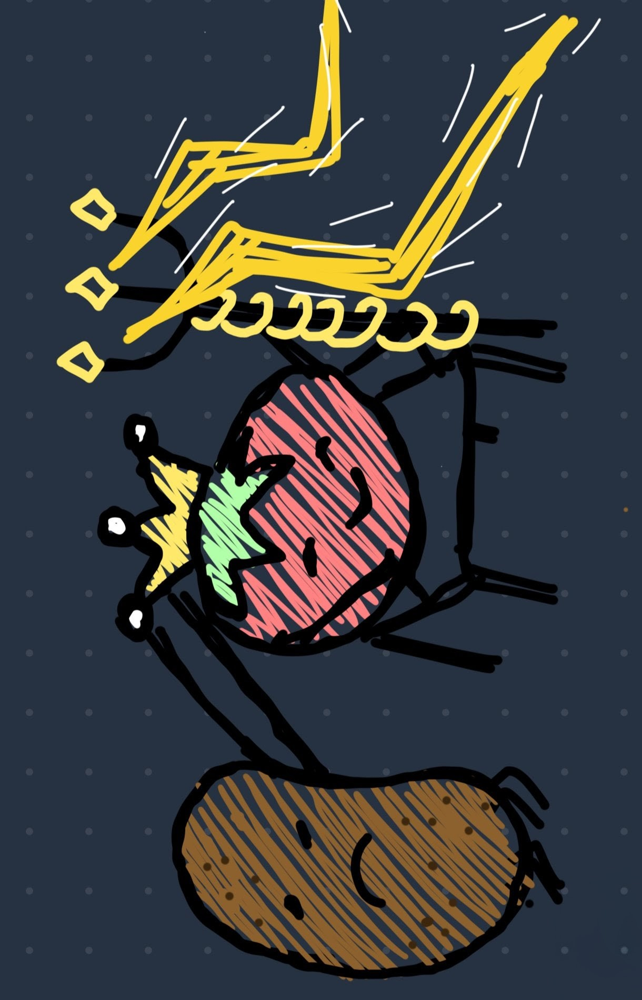
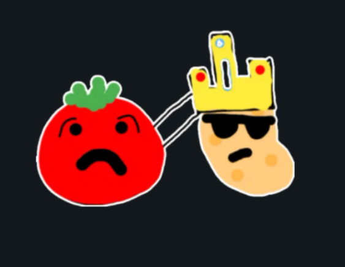
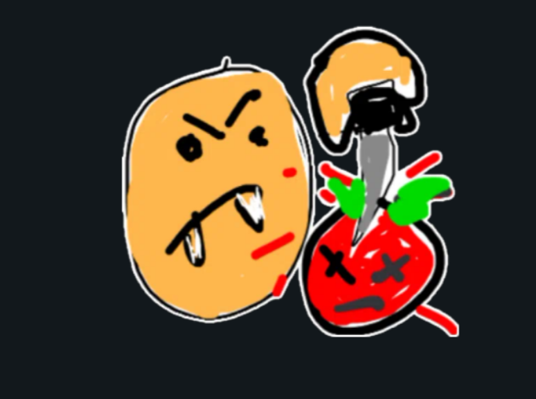
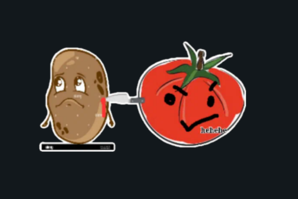
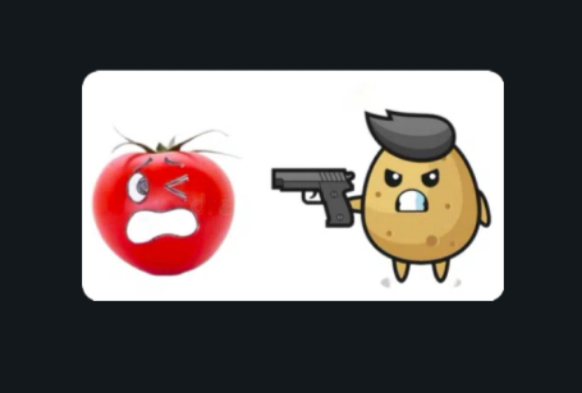
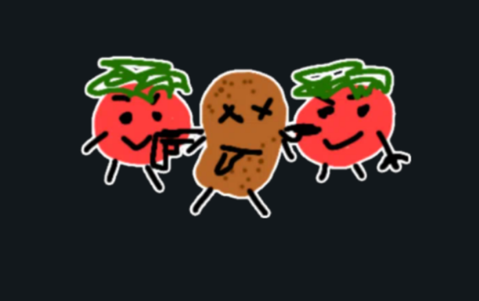
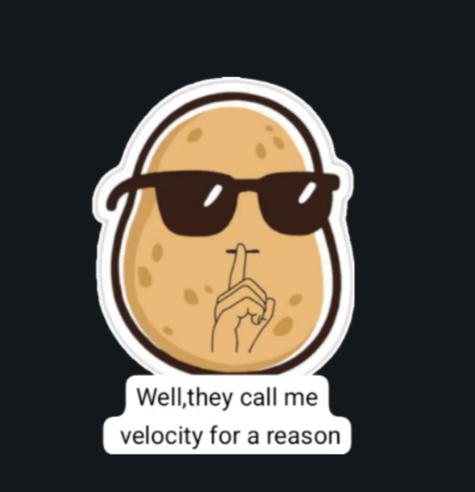

🥔 🍅 🥔 🍅 🥔

Home
Velroypedia
Welcome to the velroy wikipedia!
Welcome to the velroy wikipedia!
born at a very young age
CLASSIFIED DOCUMENTS • DECLASSIFIED AFTER EXTENSIVE POTATO INVESTIGATION
"potatoes are better than tomatoes"
true or not true?
The exact beginning of the conflict remains unknown. Historians suspect it began shortly after Velroy and Marissa met.
97% of statistics were created during the debate. The remaining 3% may or may not exist.
"I saw everything."
— Tomato #47
"ai claims we are better"
— Potato #2(aka mac)
The debate remains unresolved. Both sides continue defending their position. Peace talks have repeatedly failed due to excessive stubbornness.






